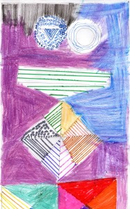

Cuento para chicos: El recreo más largo de la historia
Esta historia ocurrió cuando era chico. Ahora ya soy grande, por supuesto. Estoy en 2° grado de la primaria y el próximo año mis compañeros y yo vamos a ser los más grandes del patio en el turno tarde. Los hechos tuvieron lugar en el jardín de infantes de esta misma escuela, y se convirtieron en lo que fue el recreo más largo de la historia.
{kind=link}
Fue realmente largo. Duró 2 semanas. Lo recuerdo como si hubiese sido ayer. Estábamos en clase de dibujo con la señorita Carla, el calor de la primavera se hacía sofocante algunos días y todos, como hipnotizados, pasábamos monótonamente nuestras ceritas de colores sobre las hojas Canson A3. Mi brazo parecía el péndulo de un reloj que ya funcionaba solo a fuerza de tal aburrimiento. Entonces llegó la salvación, el timbre del recreo sonó y todos salimos corriendo dejando nuestros dibujos a la mitad.
Era el recreo de la comida, o recreo largo. Le decíamos así por que duraba 15 minutos y los otros dos solo 5. En los cortos uno no alcanzaba a salir, pasar por el baño, tomar agua en el bebedero, patear un par de pelotas, que ya tenía que regresar. En cambio el recreo largo era otra cosa, era otro mundo. Uno podía caminar tranquilo, sin tener que atropellarse para llegar al baño, comprar un sanguche o una factura, comer con los compañeros mientras charlaba de dibujos animados e incluso gastarle una buena broma a las chicas. Era la mejor parte del día.
Nos encontrábamos en medio de una de esas bromas cuando mi reloj marcaba que iban 13 minutos del recreo. Más vale que nos apuremos, le dije a Mariano, sino no llegamos. Lo ayudé a darle los últimos ajustes al andamiaje que habíamos preparado. Apretar unas tuercas por aquí, tensar unas correas por allá. Y lo más importante, llenar el recipiente con agua y pintura.
La idea original era esta: cuando toca el timbre de regresar al aula, las chicas siempre son las primeras, antes que cualquier maestra. Y de las chicas, la primera siempre es Sofi. Ahora que miro el pasado, me doy cuenta de lo linda que era Sofía (a fin de año se cambio de colegio). Me gustaba, me tenía loco, y por eso era siempre ella, y no otra, el blanco de mis travesuras.
Volviendo a la idea, Sofi sería la primera en entrar, la puerta estaría convenientemente cerrada. Al girar el picaporte, accionaría un mecanismo de correas y poleas para que el recipiente lleno de agua roja caiga sobre sus hermosos cabellos rubios y los tiña. Un clásico. Al menos en la tele.
Digo que esa era la idea original, por que todo resultó totalmente de otro modo. Por empezar, el timbre del final del recreo nunca sonó. Mi reloj marcaba que llevábamos 16 minutos de libertad, y el timbre que todos los días era religiosamente accionado a horario por Gaspar, un ex militar que nos daba carpintería pero hacía a las veces de celador, no había sonado. Lo segundo que llamó mi atención fue que una de las maestras de la salita verde nos empezó a repartir caramelos y nos agrupó en el fondo del patio. Se veía algo rara y cuando nos hablaba le temblaba la voz.
Pero lo que cambió realmente todo fue un grupo de hombres vestidos de negro que vimos pasar por un pasillo. Tenían las caras cubiertas y en las manos armas de juguete. Al menos eso fue lo que la de la verde nos dijo.
Luego tres cosas sucedieron casi al mismo tiempo y bastante rápido. Primero se escuchó un ruido fuertísimo, como si mil petardos explotaran a la vez contra el portón de los Peretti. Luego un montón de personas salieron corriendo de una de las aulas. Esto fue realmente extraño, por que no las habíamos visto entrar. Lo tercero que pasó fue que 2 patrulleros y un camión de bomberos se hicieron presentes a toda velocidad entrando tan bruscamente al patio que rompieron las rejas que dan a la calle. La voz del comisario se oyó a través del altoparlante. “Están rodeados, dejen salir a los chicos y luego entréguense”.
El siguiente recuerdo que tengo es estar sentado en una ambulancia, tomando agua fresca con mi mamá al lado. Un médico decía algo de shock post traumático, pero yo no se qué quiere decir. Al otro día también alcancé a reunir un poco más de información en el noticiero, pero enseguida mi papá cambió de canal. Decían algo sobre un grupo comando que había querido robar el banco que está al lado de la escuela. Yo los únicos comandos que conozco son los del video juego.
La cuestión es que con todo ese alboroto no volvimos a la escuela hasta 2 semanas después y fue por eso el recreo más largo de la historia.
El verdadero problema para mí en todo esto tuvo lugar cuando volvimos a la escuela e hicimos una fila fuera del aula. No recordé que el mecanismo para nuestra broma seguía preparado hasta que vi a la directora girar la perilla y entrar primera. Entró rapidísimo y salió pintada de rojo. Yo no entré ese día al aula, me había ganado un pasaje directo a la dirección.
Comentarios
Comments powered by Disqus